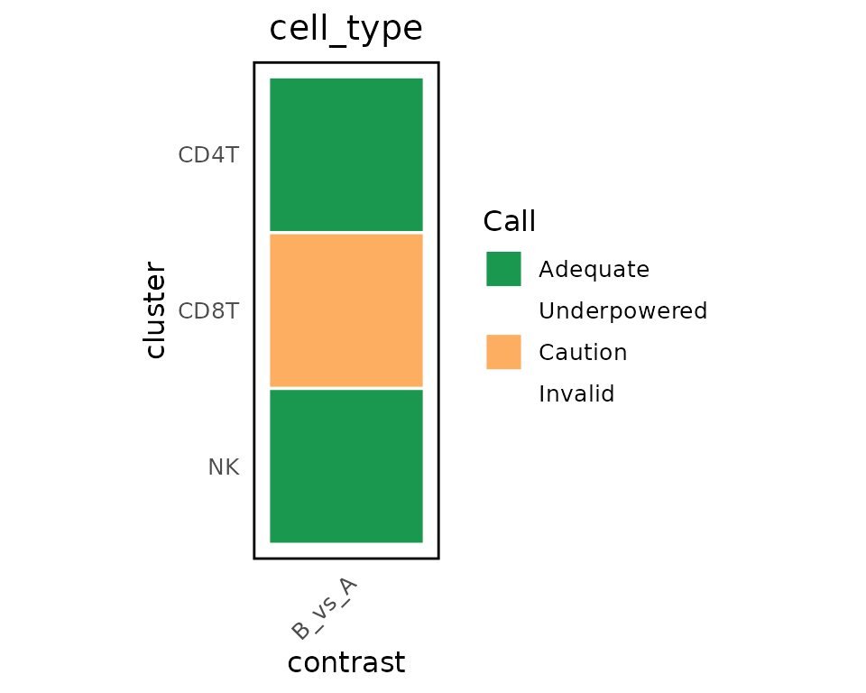
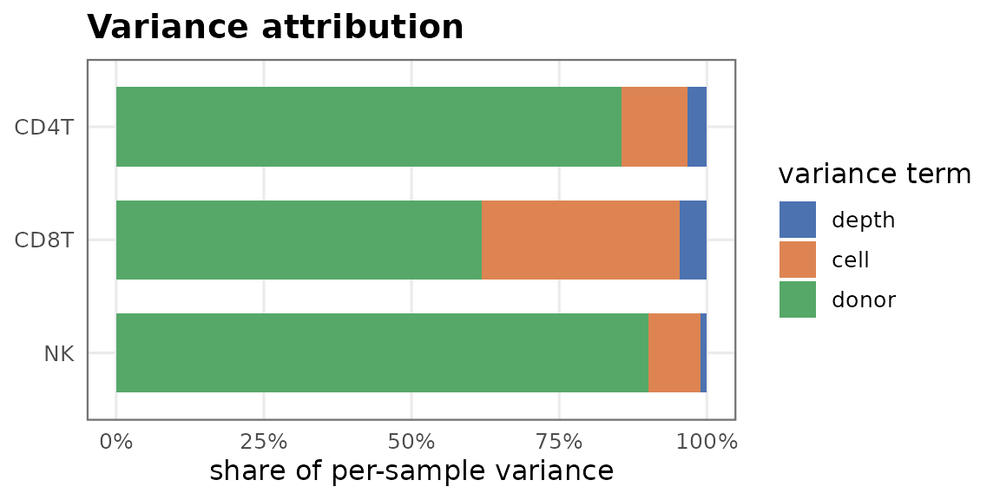
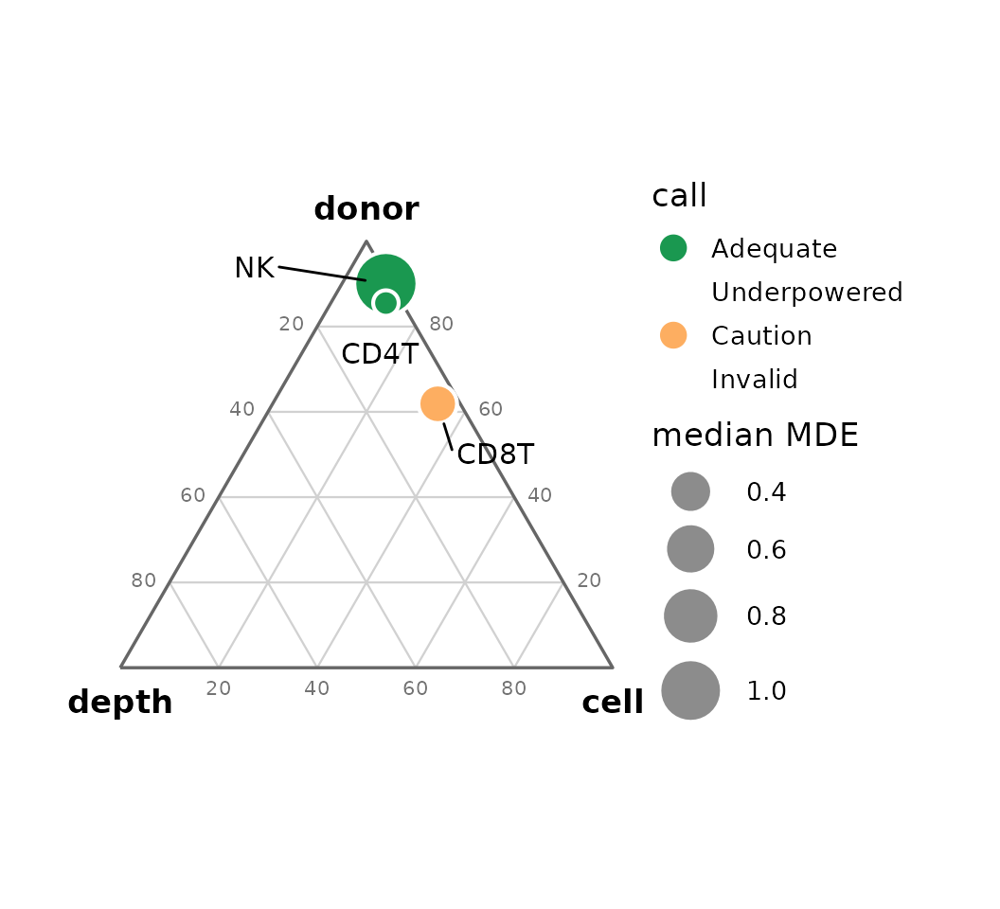
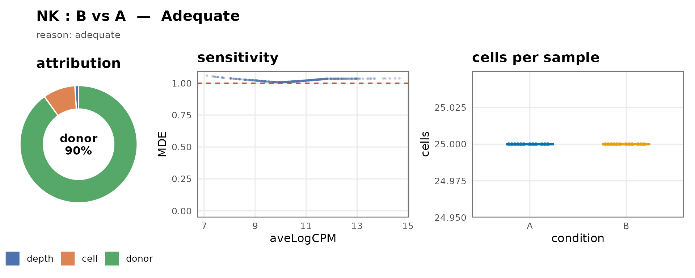

What seny does
For every cluster-by-contrast comparison in a multi-sample
single-cell dataset, seny decides whether a pseudobulk
differential-expression test is Adequate,
Underpowered, Caution or
Invalid, and explains why. The diagnostics are analytic
and run on your own data; there is no per-dataset simulation.
The call has a severity order — Invalid > Caution >
Underpowered > Adequate — and a reason string that lists
every flag, so a single headline never hides a second
problem:
| Call | Meaning |
|---|---|
| Invalid | Type I error cannot be trusted (design not estimable, too few samples per group). |
| Caution | Valid, but a specific risk applies (condition confounded with a covariate, or cell-count imbalance tracking the condition). |
| Underpowered | Valid but unable to detect the target effect (sensitivity too low, or too few testable genes). |
| Adequate | No flags. |
The example dataset
seny ships a small simulated dataset: 24 donors (12 per
condition), three cell types, each planted in a different regime so the
call varies.
library(seny)
sce <- readRDS(system.file("extdata", "example_sce.rds", package = "seny"))
table(sce$cell_type, sce$condition)
#> Loading required namespace: SingleCellExperiment
#>
#> A B
#> CD4T 1080 1080
#> CD8T 840 180
#> NK 300 300Running the assessment
assessAll() chains the layers — pseudobulk setup,
design/confounding (layer 1), pseudobulk quality (layer 2), variance
structure and sensitivity (layer 4) — and returns one row per
comparison.
res <- assessAll(sce, sample = "donor", group = "condition",
annotations = "cell_type", targetLFC = 1)
#> calcNormFactors has been renamed to normLibSizes
#> calcNormFactors has been renamed to normLibSizes
#> calcNormFactors has been renamed to normLibSizesThe comparison table carries the layer-2 cell-quality metrics
alongside the call. cells_cond_cor is the correlation of
log cells-per-sample with the condition; cells_ratio is the
smaller group median over the larger; expected_recall is
the share of true effects of the target size the test is expected to
detect (mean per-gene power at the target), and drives the Adequate /
Underpowered call.
cols <- c("cluster", "nA", "nB", "median_cells", "gini_cells", "cells_ratio",
"cells_cond_cor", "n_testable", "expected_recall", "call")
knitr::kable(as.data.frame(res)[, cols], digits = 2, row.names = FALSE)| cluster | nA | nB | median_cells | gini_cells | cells_ratio | cells_cond_cor | n_testable | expected_recall | call |
|---|---|---|---|---|---|---|---|---|---|
| CD4T | 12 | 12 | 90.0 | 0.00 | 1.00 | NA | 400 | 1.00 | Adequate |
| CD8T | 12 | 12 | 42.5 | 0.32 | 0.21 | -1 | 400 | 1.00 | Caution |
| NK | 12 | 12 | 25.0 | 0.00 | 1.00 | NA | 400 | 0.78 | Adequate |
Each non-adequate call explains itself:
d <- as.data.frame(res)
for (i in seq_len(nrow(d))) {
cat(d$cluster[i], "->", as.character(d$call[i]), "::", d$reason[i], "\n")
}
#> CD4T -> Adequate :: adequate
#> CD8T -> Caution :: cell-count imbalance correlated with condition (r -1.00, cutoff 0.50 at 24 samples; consider sample weights)
#> NK -> Adequate :: adequateHere CD4 T is clean (Adequate); CD8 T has far fewer
cells in condition B, so its cell-count imbalance tracks the condition
and breaks the equal-variance assumption (Caution —
consider voom sampleWeights or dreamlet precision weights);
NK has high between-donor variance at a modest cell count, so few genes
are detectable at the target effect (Underpowered).
The traffic-light matrix
plotAdequacy() renders the table as a
clusters-by-contrasts grid, one plot per annotation set, coloured by the
call — the at-a-glance view.
plots <- plotAdequacy(res)
plots[["cell_type"]]
Reading the diagnostics
A family of plotting functions explains the calls.
plotVariance() shows where each comparison’s noise comes
from — the depth, cell and donor shares of the per-sample variance. A
donor-dominated bar means only more donors will help.
plotVariance(res)
plotRegime() places the same decomposition on one
triangle, coloured by the call and sized by the median detectable
effect: position shows where the noise is, size shows how hard detection
is.
plotRegime(res)
plotComparison() assembles a single comparison — the
call and its reason, the variance donut, the sensitivity curve and the
cells per sample — into one card.
plotComparison(res, "cell_type:NK:B_vs_A")
Other views: plotConfounding() (Layer-1 association),
plotCells() (cells per sample by condition),
plotSensitivity() (detectable effect vs expression) and
plotPower() (power vs effect size).
Thresholds and honest reporting
The numeric cut-offs that drive the call live in
defaultThresholds() and can be overridden. They are
provisional placeholders — the final values are being
derived from a validation study (OneK1K, AIDA and an in-house atlas),
not chosen up front.
str(defaultThresholds())
#> List of 7
#> $ cramerV : num 0.3
#> $ vif : num 5
#> $ sensitivity : num 0.5
#> $ minSamples : num 2
#> $ cellsCondCor : num 0.5
#> $ cellsCondAlpha: num 0.05
#> $ minTestable : num 200This run assessed 3 comparisons. When you scan many comparisons at once, treat the matrix as a screen, not a ranking: picking the standout cell after the fact inflates false positives. The call tells you which comparisons are worth testing — it does not replace multiple-testing control across them.
sessionInfo()
#> R version 4.6.2 (2026-10-29)
#> Platform: x86_64-pc-linux-gnu
#> Running under: Ubuntu 26.04.1 LTS
#>
#> Matrix products: default
#> BLAS: /usr/lib/x86_64-linux-gnu/openblas-pthread/libblas.so.3
#> LAPACK: /usr/lib/x86_64-linux-gnu/openblas-pthread/libopenblasp-r0.3.32.so; LAPACK version 3.12.0
#>
#> locale:
#> [1] LC_CTYPE=C.UTF-8 LC_NUMERIC=C LC_TIME=C.UTF-8
#> [4] LC_COLLATE=C.UTF-8 LC_MONETARY=C.UTF-8 LC_MESSAGES=C.UTF-8
#> [7] LC_PAPER=C.UTF-8 LC_NAME=C LC_ADDRESS=C
#> [10] LC_TELEPHONE=C LC_MEASUREMENT=C.UTF-8 LC_IDENTIFICATION=C
#>
#> time zone: UTC
#> tzcode source: system (glibc)
#>
#> attached base packages:
#> [1] stats graphics grDevices utils datasets methods base
#>
#> other attached packages:
#> [1] seny_0.0.1
#>
#> loaded via a namespace (and not attached):
#> [1] SummarizedExperiment_1.42.0 beeswarm_0.4.0
#> [3] gtable_0.3.6 xfun_0.62
#> [5] bslib_0.12.0 ggplot2_4.0.3
#> [7] ggrepel_0.9.8 Biobase_2.72.0
#> [9] lattice_0.23-1 vctrs_0.7.3
#> [11] tools_4.6.2 generics_0.1.4
#> [13] stats4_4.6.2 parallel_4.6.2
#> [15] Matrix_1.7-6 RColorBrewer_1.1-3
#> [17] S7_0.2.2 desc_1.4.3
#> [19] S4Vectors_0.50.3 sparseMatrixStats_1.24.0
#> [21] lifecycle_1.0.5 compiler_4.6.2
#> [23] farver_2.1.2 textshaping_1.0.5
#> [25] statmod_1.5.2 Seqinfo_1.2.0
#> [27] codetools_0.2-20 glmGamPoi_1.24.0
#> [29] vipor_0.4.7 htmltools_0.5.9
#> [31] sass_0.4.10 yaml_2.3.12
#> [33] pkgdown_2.2.1 jquerylib_0.1.4
#> [35] BiocParallel_1.46.0 SingleCellExperiment_1.34.0
#> [37] DelayedArray_0.38.2 cachem_1.1.0
#> [39] limma_3.68.5 abind_1.4-8
#> [41] locfit_1.5-9.12 digest_0.6.39
#> [43] labeling_0.4.3 splines_4.6.2
#> [45] fastmap_1.2.0 grid_4.6.2
#> [47] cli_3.6.6 SparseArray_1.12.3
#> [49] patchwork_1.3.2 S4Arrays_1.12.1
#> [51] edgeR_4.10.7 withr_3.0.3
#> [53] DelayedMatrixStats_1.34.0 scales_1.4.0
#> [55] ggbeeswarm_0.7.3 rmarkdown_2.32
#> [57] XVector_0.52.0 matrixStats_1.5.0
#> [59] otel_0.2.0 ragg_1.5.2
#> [61] beachmat_2.28.0 evaluate_1.0.5
#> [63] knitr_1.52 GenomicRanges_1.64.0
#> [65] IRanges_2.46.0 rlang_1.3.0
#> [67] Rcpp_1.1.2 glue_1.8.1
#> [69] BiocGenerics_0.58.1 jsonlite_2.0.0
#> [71] R6_2.6.1 MatrixGenerics_1.24.0
#> [73] systemfonts_1.3.2 fs_2.1.0